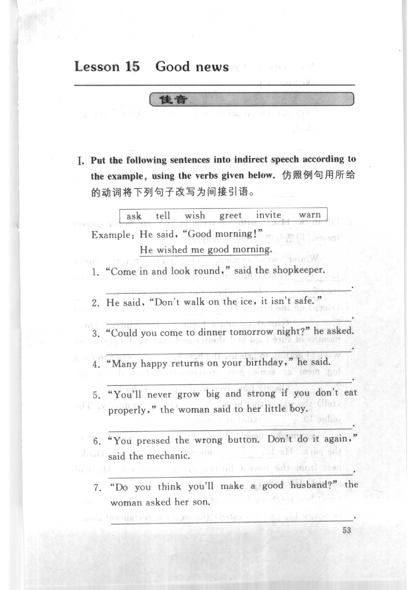
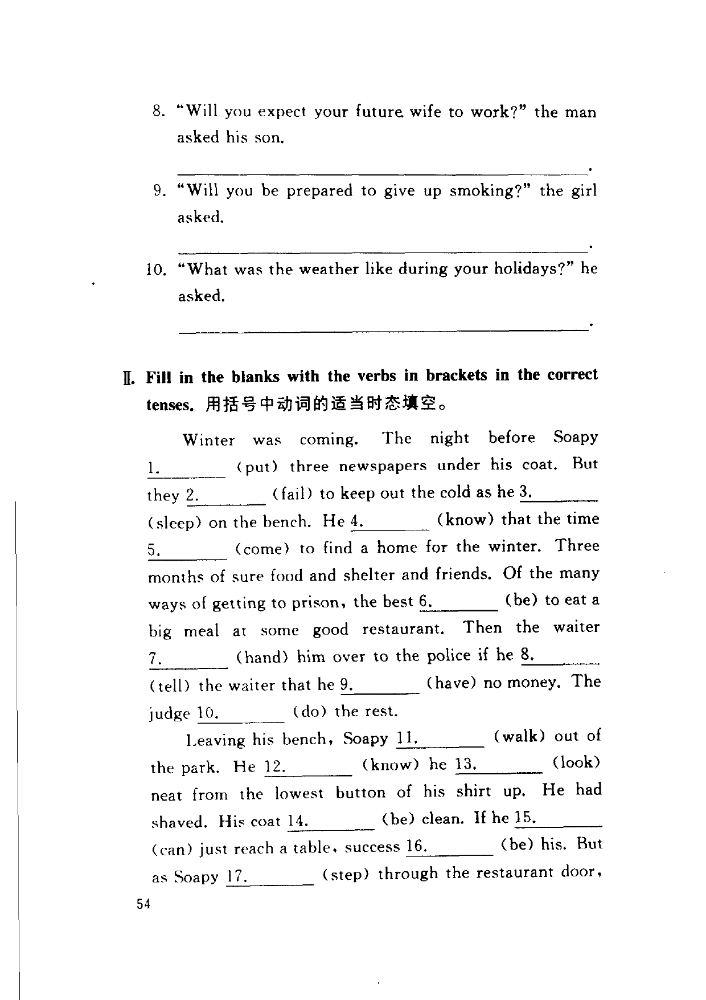
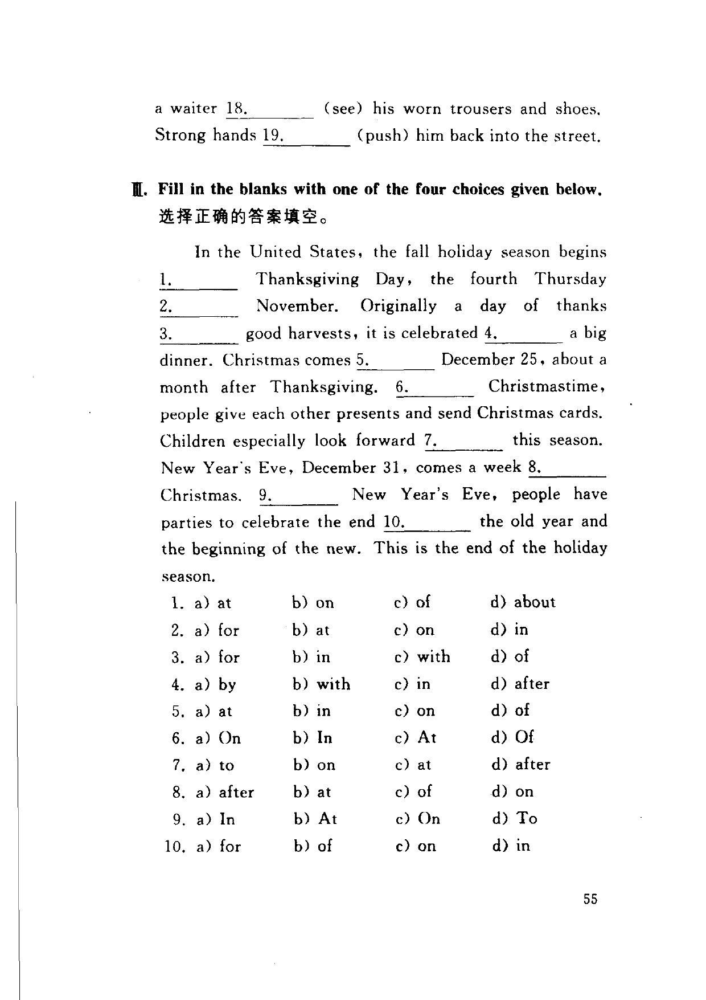

Grammar exercises · 语法练习
I. Put the following sentences into indirect speech according to the example, using the verbs given below.
仿照例句用所给的动词将下列句子改写为间接引语。
ask · tell · wish · greet · invite · warn
Example · 例句
He said, "Good morning!"
He wished me good morning.
-
I. Indirect speech — "Come in and look round," said the shopkeeper.
-
I. Indirect speech — He said, "Don't walk on the ice, it isn't safe."
-
I. Indirect speech — "Could you come to dinner tomorrow night?" he asked.
-
I. Indirect speech — "Many happy returns on your birthday," he said.
-
I. Indirect speech — "You'll never grow big and strong if you don't eat properly," the woman said to her little boy.
-
I. Indirect speech — "You pressed the wrong button. Don't do it again," said the mechanic.
-
I. Indirect speech — "Do you think you'll make a good husband?" the woman asked her son.
-
I. Indirect speech — "Will you expect your future wife to work?" the man asked his son.
-
I. Indirect speech — "Will you be prepared to give up smoking?" the girl asked.
-
I. Indirect speech — "What was the weather like during your holidays?" he asked.
II. Fill in the blanks with the verbs in brackets in the correct tenses.
用括号中动词的适当时态填空。
-
II. Tenses — Winter was coming. The night before Soapy 1. (put) three newspapers under his coat. But they 2. (fail) to keep out the cold as he 3. (sleep) on the bench. He 4. (know) that the time 5. (come) to find a home for the winter. Three months of sure food and shelter and friends. Of the many ways of getting to prison, the best 6. (be) to eat a big meal at some good restaurant. Then the waiter 7. (hand) him over to the police if he 8. (tell) the waiter that he 9. (have) no money. The judge 10. (do) the rest.
Leaving his bench, Soapy 11. (walk) out of the park. He 12. (know) he 13. (look) neat from the lowest button of his shirt up. He had shaved. His coat 14. (be) clean. If he 15. (can) just reach a table, success 16. (be) his. But as Soapy 17. (step) through the restaurant door, a waiter 18. (see) his worn trousers and shoes. Strong hands 19. (push) him back into the street.
III. Fill in the blanks with one of the four choices given below.
选择正确的答案填空。
In the United States, the fall holiday season begins 1. ___ Thanksgiving Day, the fourth Thursday 2. ___ November. Originally a day of thanks 3. ___ good harvests, it is celebrated 4. ___ a big dinner. Christmas comes 5. ___ December 25, about a month after Thanksgiving. 6. ___ Christmastime, people give each other presents and send Christmas cards. Children especially look forward 7. ___ this season. New Year's Eve, December 31, comes a week 8. ___ Christmas. 9. ___ New Year's Eve, people have parties to celebrate the end 10. ___ the old year and the beginning of the new. This is the end of the holiday season.
-
III. Prepositions — 1. a) at b) on c) of d) about
-
III. Prepositions — 2. a) for b) at c) on d) in
-
III. Prepositions — 3. a) for b) in c) with d) of
-
III. Prepositions — 4. a) by b) with c) in d) after
-
III. Prepositions — 5. a) at b) in c) on d) of
-
III. Prepositions — 6. a) On b) In c) At d) Of
-
III. Prepositions — 7. a) to b) on c) at d) after
-
III. Prepositions — 8. a) after b) at c) of d) on
-
III. Prepositions — 9. a) In b) At c) On d) To
-
III. Prepositions — 10. a) for b) of c) on d) in
Original images · 原图对照
Expand a page to compare it with the transcription. Open the original in a new tab to zoom in.
展开原图核对文字，也可以在新标签页打开原图放大查看。
Book page 1 · Exercise I (indirect speech, items 1–7)
Open original · 打开原图 ↗ Download original · 下载原图


Book page 2 · Exercise I (items 8–10) and Exercise II (tenses, item 1)
Open original · 打开原图 ↗ Download original · 下载原图


Book page 3 · Exercise II (continued) and Exercise III (prepositions, items 1–10)
Open original · 打开原图 ↗ Download original · 下载原图


Your notes and answers
Use this space for longer responses or exercises that do not have an individual answer box.